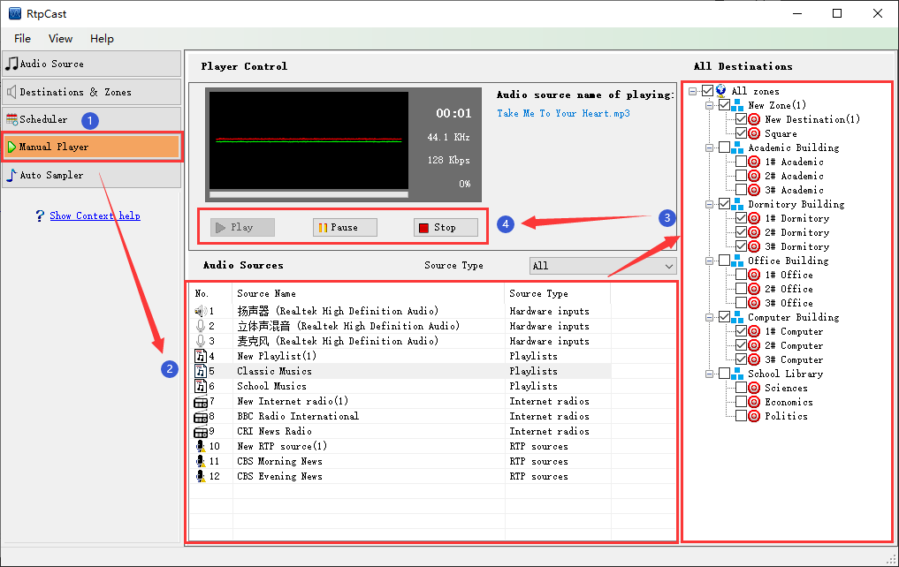

|  |
|
Introduction |
|
Manual player can play, pause and stop the audio source. |
|
Operation |
| (1) Select the audio source item from list, and then check the destination. |
| (2) Click [Play] to start playing,the system will show audio source informations (e.g. music name, playback progress and time) in the player control panel. You also can [Pause] or [Stop] during playing. |